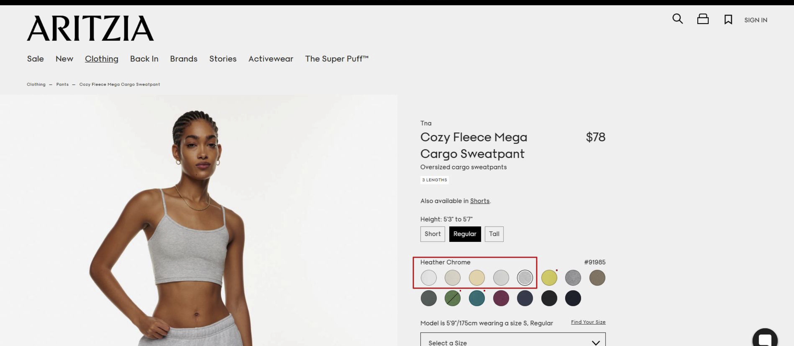
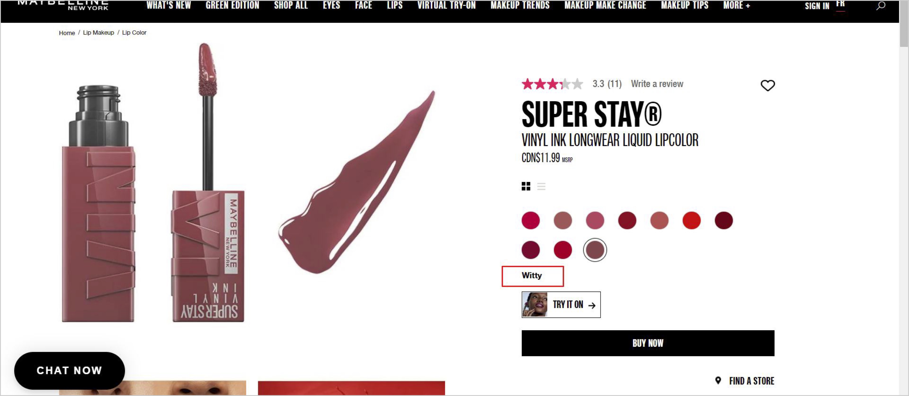
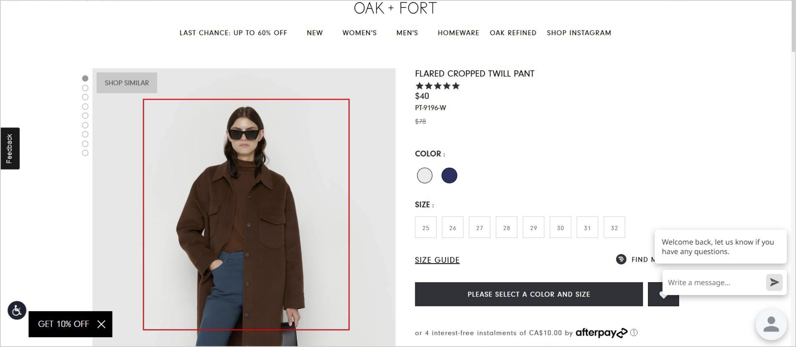
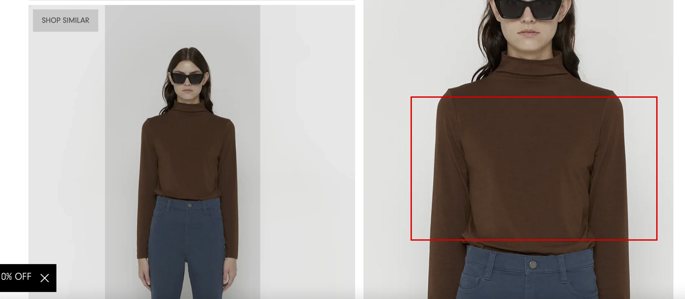
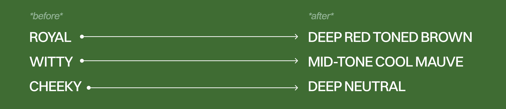

The project was centred around colour blindness, which the team extensively researched through the lens of relevant precedents. This culminated in a comprehensive case study report and prototypes illustrating the proposed solutions.
Contributions:
UX/UI Design, User Research, Prototype, Interaction Design
Team:
Jae Eun Kim, Valeriya Ten, Andrea So
Duration:
Spring 2023, 3-Week Academic Project
Approximately 8% of men and 0.5% of women have a colour perception deficit (Johnson, 2020). Many e-commerce websites lack clear labels indicating their products’ colour variation.
This poses a challenge for colour-blind people as they cannot distinguish between all options properly. In addition to the posited accessibility issue within e-commerce websites, we found that some websites use confusing names for their products without providing any additional information.
If a product has only one unique design, is the product’s colour described and labelled properly on the websites?
This poses a challenge for colour-blind people as they cannot distinguish between all options properly. In addition to the posited accessibility issue within e-commerce websites, we found that some websites use confusing names for their products without providing any additional information.
If one clothing product has multiple colours, does its website display all colours within the same shade in a way that people can intuitively distinguish?
This question was formed while browsing Aritzia’s webpage showing Cozy Fleece Mega Cargo Sweatpant (LINK). It was difficult to distinguish between the light colours in grey tones because our visual system is not designed to detect absolute brightness levels.
If a product has colour variations and ambiguous names, do e-commerce websites provide additional colour descriptions?
The question was drawn from the Maybelline Super Stay Lipcolor (LINK). The colours are not descriptive as the names refer to human personalities, such as “cheeky”. We identified a problem as the website only supplies the unique product name, but lacks the actual colour descriptors.
How can fashion e-commerce companies better present colour-matching choices for the entire outfit for colour-blind people?
This question was derived from Oak and Fort’s Flared Cropped Twill Pant (LINK). Although this page is dedicated to pants, the models have multiple pieces of clothing that complement the pants. However, Colour-blind people lack the visual perception to learn about colour choices.
How can fashion e-commerce companies better present the information about textures and patterns of fashion items for colour-blind people?
To continue exploring the topic, I have proposed another issue after the completion of the project. This question was derived from Oak and Fort’s Flared Cropped Twill Pant (LINK). The website offers the option to zoom into the product, but the information is minimal. This can pose a problem for colour-blind individuals in determining whether an item will work for them or not.
With the proposed user challenges, the team was trying promote an inclusive e-commerce experience and expand the target market to colour-blind people as adding certain accessibility features can have a tangible advantage - a broader user reach in general. Simply ignoring accessibility can not only put the colour-blind population at a disadvantage but also harm online retail companies in revenue and impact.
To solve the issues, the team brainstormed various potential solutions. After receiving feedback from a classmate with colour blindness, we iterated and settled on the following solutions I proposed, which I also prototyped, to visualize the team’s solutions.
Visual Indication for the Hovered Colour Label
Taking reference from the Adidas Adizero website display, the colour-blind population would have difficulty identifying which part of the shoe each colour corresponds to. Therefore, the idea of colour labels that mark a direct connection to the product was implemented.
Implementation of a Comparison Pop-up Window
Taking reference from Aritzia’s Cozy Fleece Mega Cargo Sweatpant. It was difficult to distinguish between the colours as we could only use the small colour patches. Therefore, integration of a comparison system, where product photos in similar shades can be compared at a glance, was implemented.
Clear Self-descriptive Colour Names
The example can be found at Maybelline’s Super Stay lipcolor website display, where it provides a list of ambiguous names, such as “cheeky”, “royal”, or “witty”. In response to this, It would be beneficial to include additional colour information.
Visual Indication for the Hovered Item Label
Took reference from Oak and Fort’s Twill Pant. Although the website gives imagery with styling options for the pants, there was no description of the colour of those items. Therefore, an indication of the colours of not only the main item but also the recommended items was implemented.
Zoomed-in Fabric Image with Detailed Description
Took reference from Oak and Fort’s Twill Pant. To address this issue, fashion e-commerce websites can provide more detailed information about the texture and pattern of their products, such as close-up photos with detailed written descriptions.
Currently, colour blindness affects around 8% of the world’s population (Johnson, 2020). We identified that most e-commerce websites are still poorly designed for people with disabilities. When it comes to online shopping, this condition can make it extremely hard to distinguish between product colour options and combinations.
Jeff Johnson (2020) states that it is important to run any design through a colour-blindness simulator to identify any weak spots that could impact colour-blind people’s ability to navigate smoothly. However, we found that a colour-blindness simulator is not an ideal solution for e-commerce websites since physical products sold online display any colour combination depending on its product design and brand’s preference.
Therefore, we hoped to present a solution that could address such an issue properly. Our starting point was from the “Guidelines for using Colour” for interactive systems, which suggests not relying on colour alone to interact with the user but using colour in combination with other cues (Johnson, 2020).
To better contextualize the proposed issues, I developed two user personas that represent the potential that colour-blind individual face when online shopping. In addition, examples provide a personal connection between the readers and the proposed issues.
Design through Research
After we were given a topic, the team conducted in-depth research on the experience of the colour-blinded population through academic articles and user interviews. The collected data served as the foundation for creating prototypes that articulate proposed solutions, aiming to enhance the shopping experience for the population with colour blindness. This experience not only gave me an opportunity to try prototyping solutions on Figma but also provided a glimpse of all the insights and research that goes into every UI/UX decision.